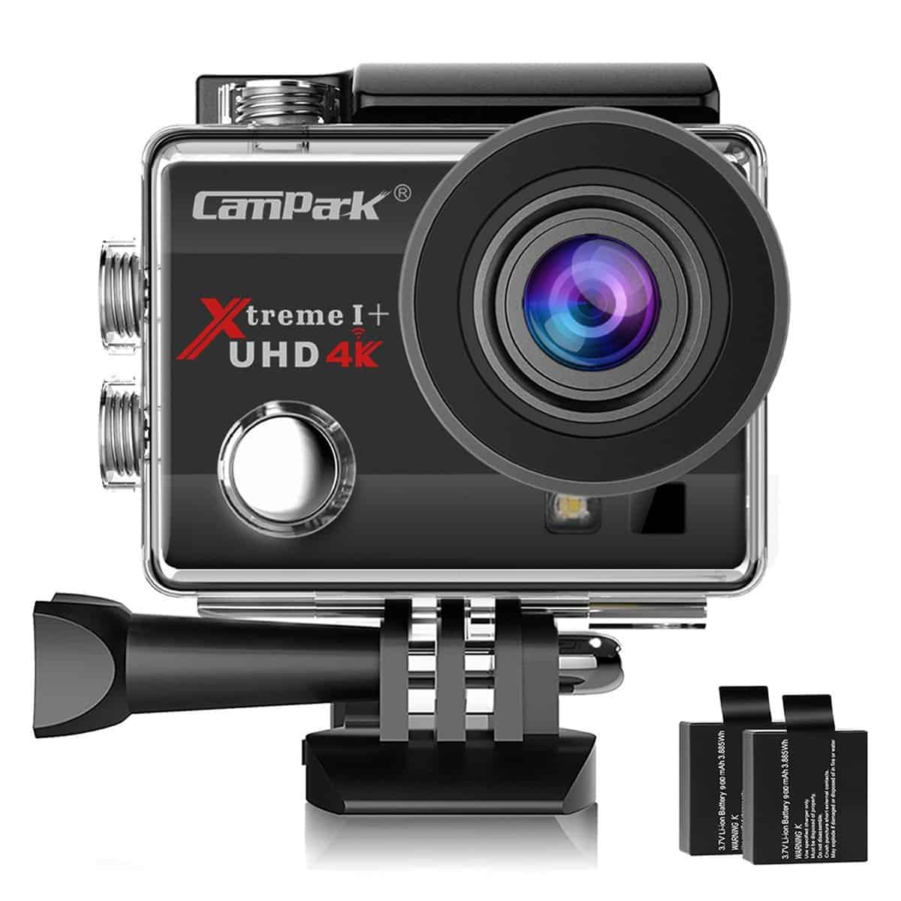
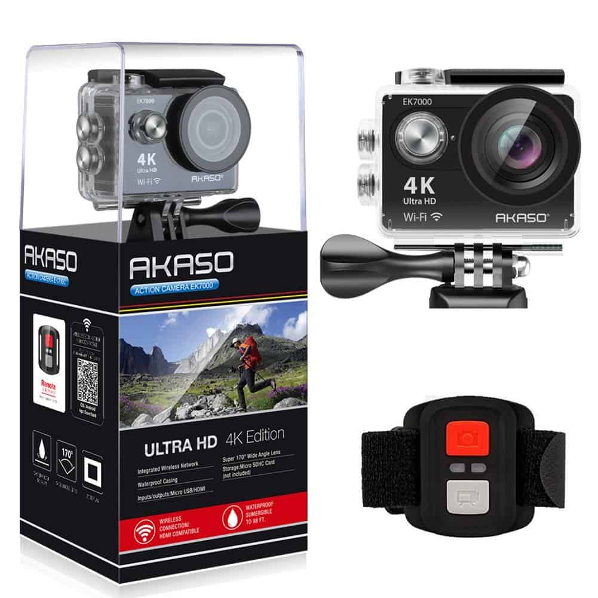
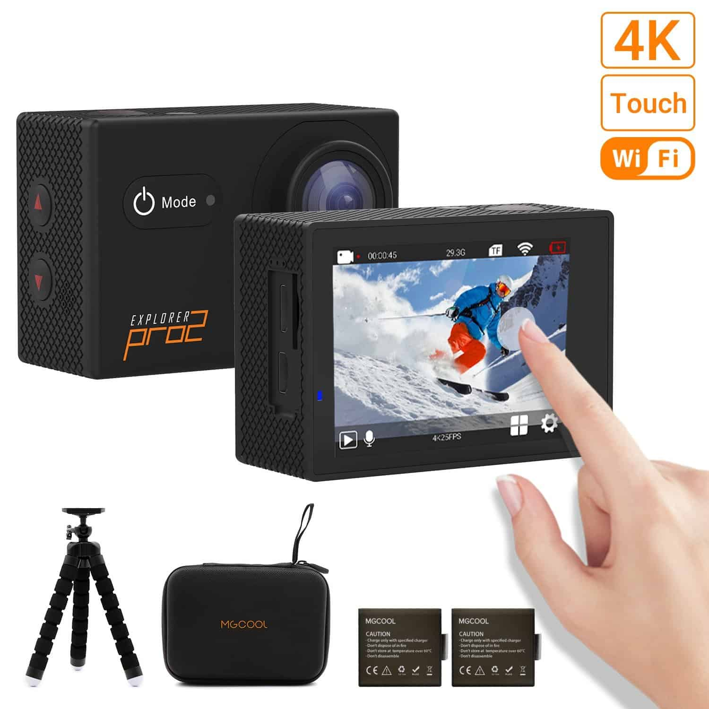
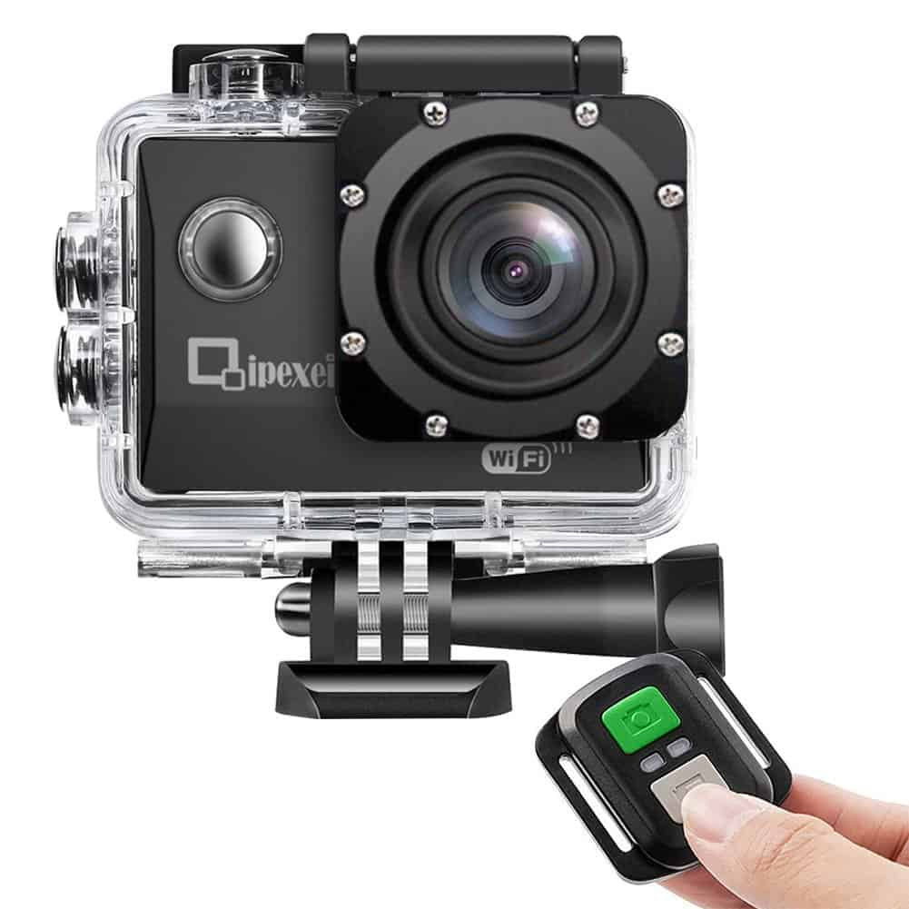
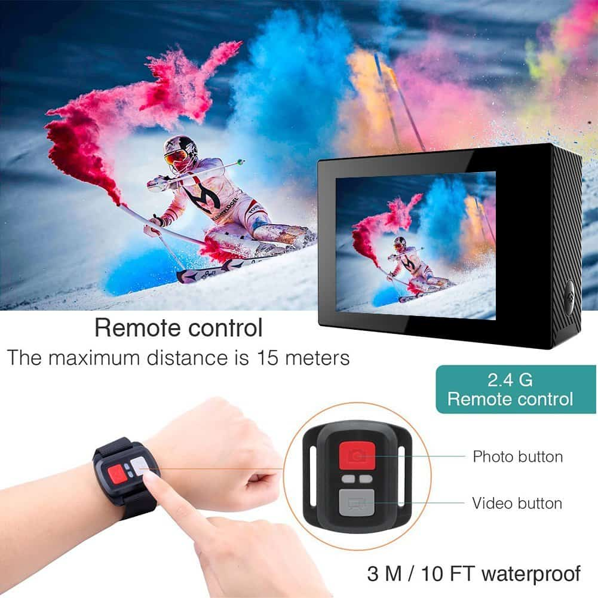
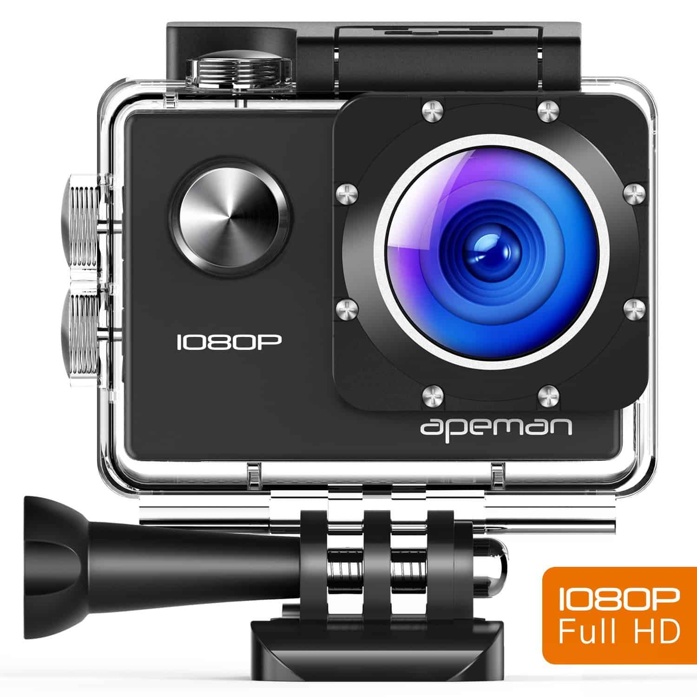
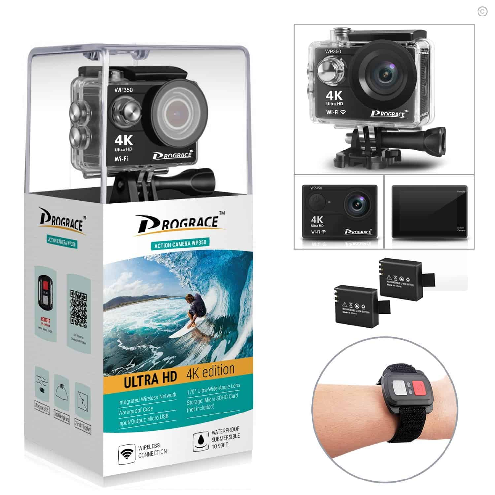
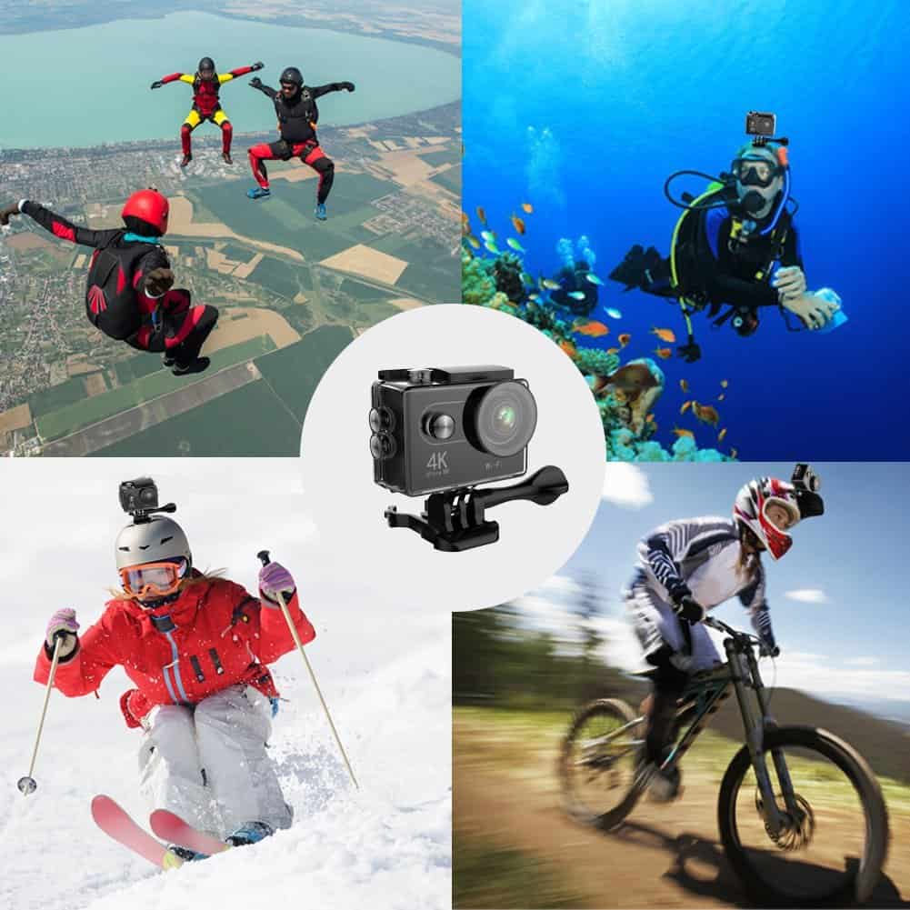
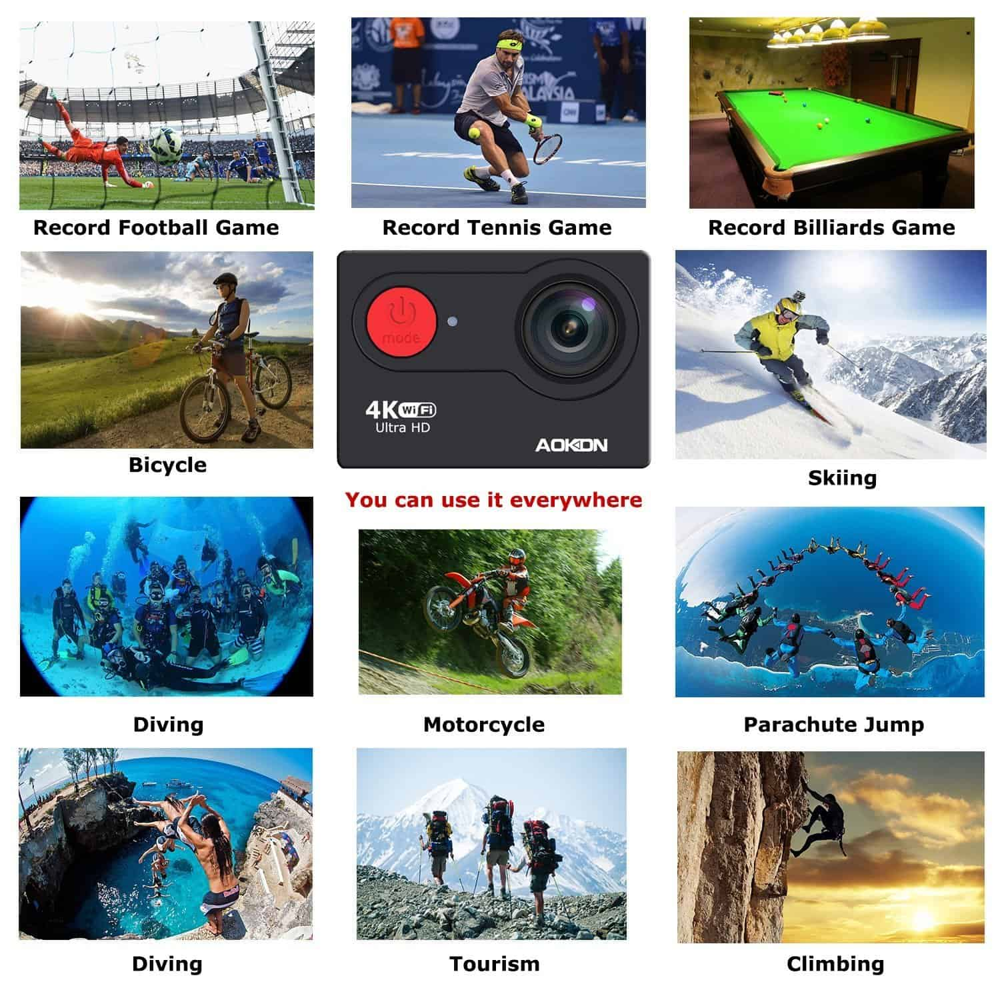
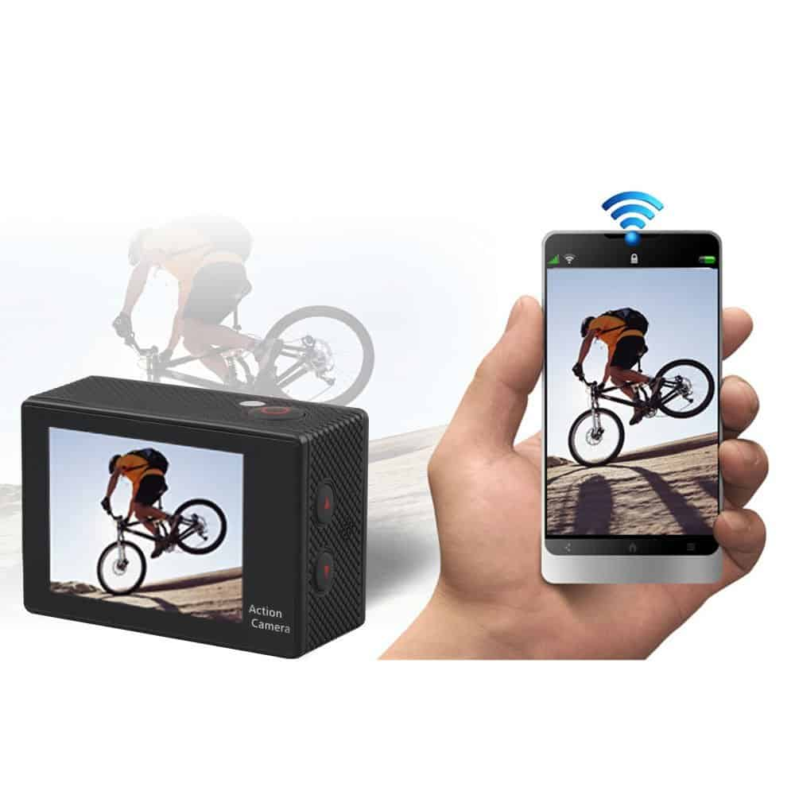

Everyone is going crazy about sports action cameras and if you are wondering what the craze is about, then don’t worry because you came to the right place. Portable sport action cameras have changed the world of filming as they help capture the world in high definition effortlessly. All the owner needs to do is attach one to a helmet, bike, surfboard or any other object of their choice and set it and they will be good to go. Whether you are skiing, canoeing, skydiving, mountain biking, skating or any other activity you like to indulge in, portable sport action cameras will go with you and capture videos and images of high quality. Now that you know what they are, the only question which remains unanswered is, which one should you buy? Read through our list of the best ten portable sports action cameras under $100 to find out.
1. Ampark ACT74 Action camera 16 MP sports cam

There is much to say about this portable sports action camera as it packs a long string of features, but we will just be brief with the essential ones. First, it comes in three colors, black, blue and silver giving you options when it comes to colors. It boasts a 1-inch high definition screen and ultra-wide lens measuring 170 degrees, so you get a broader view and also to capture all that you want in a single shot. What’s even better is that you get HD videos and images as it records videos in 4K and captures pictures in 16 megapixels. So you end up with videos and photographs which have good lighting, good quality and ones which you will want to stare at for years to come.
What’s even better, is that you do not have to wait till you are done to share your pictures or recordings as you can do so in real time, thanks to its WIFI connectivity which enables you to not only share but also control the camera with your Smartphone. Since its waterproof and you can go with it up to 30 meters deep into the water, it is suitable for scuba diving and other extreme activities.
To top it up, it has extended battery runtime as it can take pictures and record videos for three hours non-stop. That is more than enough time for you to capture myriads of images and recordings and what’s even impressive is that it can support a MicroSD card of up to 64 GB so your last worry should not be about space. Charging is also the last thing you’ll have to worry about as it comes with two 900mAh batteries which you do not need to remove. Instead, you recharge them via your USB cable through the port on the camera. You can also transfer the pics and videos to your PC via this cable. Lastly, it comes at a less-pinching price, so you have every reason to smile when it comes to the cost.
2. AKASO EK7000 4K WIFI sports action camera

The manufacturer of this portable sports action cam has a reputation of making high-tech gadgets, and so you can expect a smooth sailing experience with this one. For instance, we will begin with its battery which has a run time of ninety minutes. That means you have 1 hour and 30 minutes of non-stop runtime to record everything you want. It also has inbuilt WIFI connectivity which has a signal range of 10 meters. That means you can share your real-time pictures and videos on social media instantly and even control it on your phone, tablet or any other device via an app.
Additionally, you can also control it via wireless 2.4 G wrist remote thus eliminating the need of having to use your phone continuously. If you are someone who likes indulging in extreme water sports, then this one is for you as it comes with a waterproof case which lets you go up to 100 feet deep and with is a wide angled lens, you can record and capture a lot while underwater. Lastly, it records 4K HD videos and 12-megapixel photos and comes in black and royal blue colors to cater for different buyer preferences. However it lacks slow motion, time-lapse and the battery life is not as long as the first one on our list, but otherwise, it works just fine and has its share of unique features which you will love.
3. Mccool Pro2 Touchscreen action camera

Taking the third position on our portable sports action camera list is yet another impressive product. For example, it comes with two rechargeable lithium batteries with a run time of between 90 to 120 minutes and a 170-degree wide angle fisheye camera lens which means you have a wider view to record on. It supports WIFI which automatically means you can control it via a phone app and records videos at 4K/25FPS or 2.7/30 fps hence it’s your choice.
Pictures are captured at 16megapixels, and you can enjoy your underwater moments comfortably as it has a waterproof case which allows you to go up to a 100 feet deep and a touch screen for easy operation. Additionally, it comes with 100% money back guarantee which applies for the first 30 days which are enough to try it out and see whether it is worth keeping.
4. WIFI sports action camera

Similar to most of the portable sports action cameras on our list, you will also love the features packed into this one. First, it captures 30 frames per second in 12 megapixels which means you will not have to question the quality of your pictures and records videos at 1080P/60 fps. When it comes to controlling it, you are spoilt for choice as you can either use a smartphone app thanks to its WIFI connectivity or use the WIFI wrist remote to start or stop recording or even capture photos.
It is equipped with a 100 feet waterproof case, and it boasts robust WIFI connectivity as it can detect even when the source is 10 meters away. Thanks to the various supporting accessories which come as part of the package, setting it up is way much easy and convenient for both outdoor and indoor activities. However, there have been numerous complaints about its waterproof case being hard to operate while underwater but otherwise, it works just fine, and the good ratings and plenty of verified positive reviews prove so.
5. 4K WIFI Sports action camera

If you are looking for a portable sports action camera which has a high quality and wide angled lens which will enable you to capture even the tiniest details in a video or photo in HD, then your search might as well end here because the 4K WIFI Sports action camera is a perfect fit. It not only offers HD photos and recording but also places you in total control regardless of your current activity. For instance, it has inbuilt WIFI which means you can control it via your smartphone, Ipad, tablet or any other android or IOS device which you have through an app and also control it via the wireless wrist remote control.
Besides putting you in control, it also comes with two rechargeable batteries each one of them having a 90 minutes runtime thus you have three hours of continuous recording at your disposal, which is more than enough time to record and take as many pictures as you want. Going underwater is no longer the same as you can go up to 30 meters deep without worrying about rusting or it being destroyed thanks to the IP68 waterproof case.
Also, there are many accessories which enable you to comfortably mount it on the surface of your helmet, surfboard or any other object. Nevertheless, there have been a few customers complaining about the battery and lack of a manual, but these are issues you can quickly sort out with the customer care team, and also a few complaints do not mean that it will not work well for you.
6. APEMAN Action camera full HD action camera

With a wide LCD, a 1080P/30fps for videos and 12 megapixels for photos, this portable sports action camera offers you a bunch of features which make every moment easy to capture and remember through HD photos and videos. It has a 100 feet waterproof case and many accessories which make its operation effortless.
It comes with one 1050mAh battery, and with the built-in anti-shake technology, you can expect clear recordings and pictures. It also has a single timer and also some modes which enable you to capture precise moments of snorkeling, skiing or whichever activity you love engaging in during your free time. It can support a MicroSD of up to 32 GB and is so easy to use such that even your kids can use it.
However, it lacks the time lapse feature, and though it has the anti-shake technology, some customers complain of grainy pictures and videos. Luckily, you don’t have to believe their word for it as you have a 30-day money back guarantee for you to try it out and if it does not work, then you have the option to return and get refunded. Additionally, it comes with one year of warranty, and of course, no one can offer such a guarantee if they are not confident about the quality of their product. So why don’t you try it out today and see for yourself.
7. DROGRACE W350 sports DV Camera

Most of the manufacturers on our list have a reputation of making incredible products and this one is no exception. It features a high-resolution camera lens which is also wide angled as it has a 170-degree view hence capturing more details into your photos and videos.
It also has a Sony sensor which further makes the quality of whatever you are recording or capturing better. It is compatible with a GoPro Hero mount and comes with a diverse array of accessories to make its operation effortless. It has a 2.4 G remote control and also built-in WIFI and HDMI which further puts you in control not forgetting that you can snorkel or scuba-dive thanks to its 100 feet waterproof case comfortably犀利士 .
Its price also ensures you do not break your budget for a camera and it’s worth every cent. It is well built but comes with only one battery which has a short lifespan. However there are many satisfied buyers, and because the company values each buyer, they have a team of friendly customer care who ensure that any complaints or problems you may encounter are taken care of.
8. Hiercool H9R Action camera

The H93 comes in a black color and an appealing design, but the appearance is not the only thing that you will love about it. Other features such as its phone control app, inbuilt WIFI and HDMI, and ability to record videos at 4k and high-quality image sensor will make you love it even more as you are sure of high-quality pictures and videos.
It also features a wireless wrist remote to enable you to quickly control the recordings and videos easily no matter what you are doing. You can now start, pause and end the recordings or capture images without looking at the camera screen.
Lastly, it has a 100 feet waterproof case and comes with an extensive collection of accessories which enable you to easily mount and secure it while skiing, biking, and skating or any other activity which requires your attention but you still want to record it. Although there have been complaints from previous buyers about its 4K recordings and also not many people love the fisheye lens, it is worth giving a try because, for its price, it packs a punch of features which you only find in more pricey action cams.
9. AOKON 4K portable sports action camera

Even though getting a portable action camera comes with its perks, getting one with many accessories in the package brings even more perks by making things easy. For instance, it comes with a bicycle mount, camera clip, 3M stickers, wire rope, lens cloth and many others which make setting it up a walk in the park. Accessories aren’t the only good thing about it as the features are also high-tech. For instance, it captures pictures in 12 megapixels and videos in 4K ultra HD thus you end up with photos you can look at many years to come and still smile.
It has in-built HDMI and WIFI for more ease of operation and a wireless 2.4 G RF wrist remote for further convenience in control. You can also go with it to a depth of 30 meters in water without any worries that anything will happen to it. However, it comes with a few flaws but not deal breakers such as difficulties in detecting WIFI, short battery runtime and you may also find the smartphone application a little complicated. But if you need more assurance, there is a money back guarantee, high ratings, and positive reviews.
10. AKASO Action camera 1080 P sports camcorder

Closing our list of portable sports action cameras is another top-notch product from Akaso. It also has its perks which will change your life of filming. For an affordable price, you get a cam which captures pictures at 12 megapixels and videos at 1080 pixels making it easy for you to keep your memories with you.
It comes with myriads of accessories which help you to comfortably capture any activity you like indulging in such as two rechargeable batteries and a waterproof case which allows you to go up to 30 meters with the camera.
Also, it has a 170-degree angle lens which ensures you capture a wide angle of your scenery and its WIFI connectivity allows you to share, edit and control the camera effortlessly via your phone. The MicroSD slot supports up to 32 GB and even though there have been some complaints about its WIFI connectivity and lack of sound in the videos, the customer care team is accommodating plus it has high ratings and positive reviews which you can use for assurance.
Conclusion
All the products on our list have something special and unique to offer, so it all comes down to what you are looking for and also your hobbies. All of them boast a unique and compact design and come with a long list of accessories so you will not have any difficulties setting them up. Now, you can make an informed choice while purchasing one.